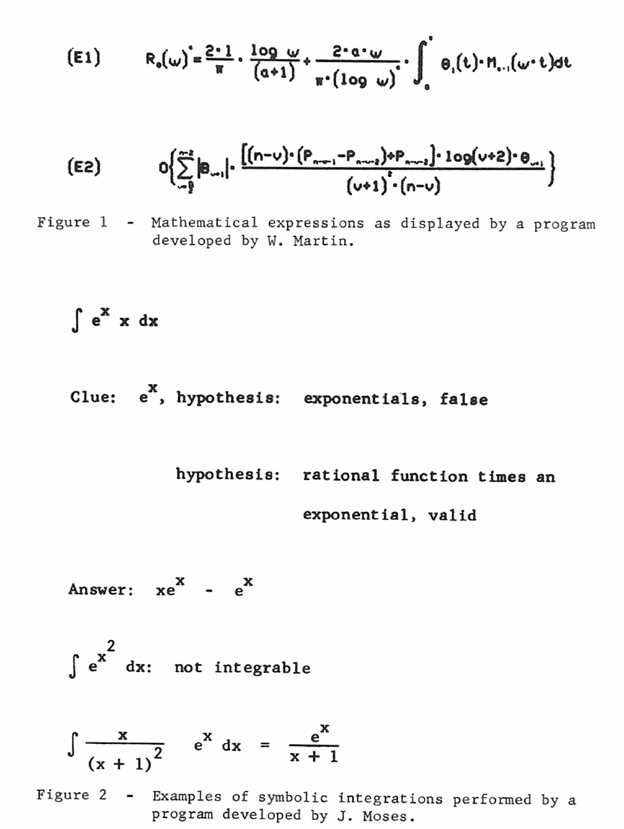

THE COMPUTER UTILITY AND THE COMMUNITY
Massachusetts Institute of Technology
Cambridge, Massachusetts
Reprinted from:
1967 IEEE INTERNATIONAL CONVENTION RECORD
Part 12
The pattern of our business and private lives has been shaped by a variety of products of technology which have increased our mobility, our ability to communicate at a distance, and our ability to mold our physical environment to our needs. In particular, power tools from electric drills to vacuum cleaners have increased the power, the precision, and the skill of our muscles. Recent experimentation with time-shared computer systems has opened the door to the development of corresponding intellectual aids which promise to increase in a similar manner the power, the precision and the skill of our minds. The operation of such intellectual aids can be envisioned in the form of a discourse between a man and a computer system, in which the latter acts as a knowledgeable and skillful assistant. Since most intellectual activities are cooperative in nature, the system must be able to serve many people simultaneously, so as to facilitate intellectual communication between them. It must also be able to act as a repository of the knowledge of the community it serves; that is, it must be able to play a role analogous to that of a library containing not only books, journals, and reports, but also the current working papers of each individual in the community. These capabilities have already been demonstrated, at least in rudimentary form, by general-purpose time-sharing systems currently in operation.
The development of time-sharing systems was motivated at the start by the narrower objective of creating for several people the illusion of having a private computer at their disposal. The technique involved amounts, in essence, to the rapid-time-division multiplexing of a central processor among several users, each operating on-line from a teletypewriter or other suitable terminal. The technique itself dates back to the early 50's, and was used in the SAGE air defense system. What is new in the various time-sharing systems developed since 1960 is that they are general-purpose systems, and thus they permit a number of people to do simultaneously totally unrelated work. Experience has shown that the value of these general-purpose systems far transcends that originally envisioned. To the professional programmer, it is the availability at one's fingertips of facilities for editing, compiling, debugging, and running programs in one continuous dialogue with the computer that has proved to be of greatest value. As a result, programmers are encouraged to be more imaginative in their work and to investigate new programming techniques and new problem approaches because of the much smaller penalty for failure. Still, the most significant effect of these time-sharing systems is seen in the achievements of persons for whom computers are tools for other objectives. They have not only changed the way problems are attacked, but also have stimulated important research in various fields - research which would not have been undertaken otherwise. It is these unexpected benefits that are responsible for the current popularity of time-sharing systems and for the present impetus towards the development of more powerful and reliable systems, capable of serving large communities in the manner of "computer utilities." The complex of recent developments centered around time-sharing systems and aimed at the exploitation of man-machine interaction is, in the view of many, the most exciting current trend in the computer field, and the one with the most far-reaching implications to each of us as an individual and to society as a whole.
The State of the Art in Time-Sharing.
A brief review of some of the characteristics of current time-sharing systems will provide the proper frame of reference for discussing the concept of computer utility and its future role in society. I shall use as an illustration the Compatible Time-Sharing System (CTSS)(12) which is currently in operation at M.I.T. An early version of this system was demonstrated at the M.I.T. Computation Center in November 1961, and a copy of a substantially improved version was installed at Project MAC in the Fall 1963. It has grown and evolved considerably ever since, and has become an indispensable research tool to many people in various fields. There are at present some 180 teletypewriter terminals, located in offices and laboratories throughout the campus, and also in the homes of a number of people for whom the system is an essential working tool. Each of these terminals can dial through the M.I.T. Private Branch Exchange either the IBM 7094 computer installation at Project MAC or the identical installation at the Computation Center. Access can also be gained from thousands of terminals of the TWX network operated by the Bell System and of the international Telex network operated in the United States by Western Union. Both installations are also connected to several small computers and to cathode-ray display stations. These display stations include a light pen for pointing at lines and characters being displayed, and for drawing on the face of a cathode ray tube. Special equipment developed by the Electronic Systems Laboratory at M.I.T.(3) makes it possible to draw with the light pen a three-dimensional object and display its projection on the face of the cathode-ray tube just as if the object were continuously rotating in three dimensions under control of the viewer.
Experience has indicated that each of the two computer installations can serve at any one time as many as 30 people, and still respond (most of the time) within a few seconds to user demands that require less than two seconds of processing time to satisfy. Overload conditions are detected by a monitoring program which automatically takes appropriate actions such as reducing the number of simultaneous users. The state of any activity which is interrupted by the monitoring program is automatically preserved to permit resuming it at some later time without any loss. The mass memory of the system is a disk file with an access time of a small fraction of a second and a capacity of approximately 36 million computer words (a computer word is roughly equivalent to a word of English text). It contains a great variety of programs of general interest to the community of users, which total approximately 1 million computer words. Private programs and data belonging to the individual users fill most of the disk file. Magnetic tapes are used for dead storage and for duplicate copies of the contents of the disk file. A copy of any new file (program or data) is made automatically, shortly after its creation.
Most of the public programs are activated by issuing "commands" of which there are about 100. Commands may perform rather specific tasks, such as: checking user's credentials and making appropriate bookkeeping entries, as required when a user introduces himself to the system or terminates a working session; compiling programs written in a variety of languages, that is, translating them into machine language; printing out files; renaming files; executing programs; preserving the state of a program whose execution has been interrupted, etc. Other commands activate entire subsystems consisting of a great many special programs; these sole_ubsystems typically interact with the user in their own special language. For instance, one such subsystem is designed to facilitate the preparation and editing of English text and includes commands for locating lines by context, changing any string of characters into another string of characters, deleting lines, inserting lines, printing out any part of the text, and a number of other editing operations. Instructions are provided for specifying the format of the final printing such as line length, page length, page headers, and indentations. A similar subsystem is available for the preparation and editing of programs. There are also a variety of subsystems for mathematical analysis, simulation, and engineering design in a variety of fields. A very important aspect of the commands currently available is that more than half of them originate from programs developed by individual users; these programs turned out to be so useful to other people as to warrant "publication" as system commands.
There are a number of system features that deserve special mention. The private files of each individual are protected by a personal password, which is requested by the system at the beginning of each session at a terminal. The teletypewriter's printer is disabled while the password is given, so that no record of it can be seen by other people. The password is checked by the system against the user's name and problem number, and further access is denied if any mismatch is detected. Together with this mechanism for insuring privacy of individual files, the system includes facilities for making one's work easily available to other people. A "permit" command is available for authorizing the use of any particular file on the part of other people. Permission can be granted to any number of specifically named individuals, or to everybody, or even to everybody but Joe. The authorization can be limited to using and copying a file, or it can include the right to modify it or even delete it. Once a person has been authorized to use a file owned by somebody else, he can "link" to it by means of an appropriate command and thereafter use it as if it were his own. The links established by each user are recorded in his file directory, together with the records of his own files. These facilities for making one's work available to other people are extensively used. At present, the average number of recorded links per user of the Project MAC system is 27, and the average number of private files per user is 34.
While the Compatible Time-sharing system was designed primarily to facilitate man-machine interaction, it also includes facilities for absentee execution of long-running programs, as in a conventional batch-processing system. The facility, known as "foreground-initiated background" allows a person to instruct the system to execute a program for him and deposit the results in his private files, from which he can retrieve them later on at his convenience. These long-running programs are executed automatically whenever the central processor has some spare time. However, the system manager can, at any time, give a partial priority to the execution of these programs by specifying that some fraction of the central processor's time should be devoted to them. This facility makes it possible to develop and test programs in an interactive mode, and then execute them in an absentee mode. As a result, cards are very seldom used in conjunction with the Project MAC system, although facilities for their use are also available.
The remoteness of the users requires that the system perform automatically various administrative functions which are usually performed by clerks. For instance, the system keeps a record of the computer time used by each person and of the mass-memory space occupied by his files. A special command is provided for printing out a statement of one's own account with the system. Quotas of computer time and memory space (or money) are assigned to user groups, and are subdivided by the group supervisors with the help of privileged commands. These commands allow each group supervisor to set and modify the quotas assigned to the individual users in his group, to authorize new users, and to change passwords. Daily reports of system usage on the part of the members of each group are deposited in the private files of the group supervisor for his inspection. Various summary reports are also automatically prepared for the benefit of the system manager. These facilities make it possible to delegate authority and responsibility to people who are personally familiar with the needs of individual users. Another administrative function that had to be automated because of the remoteness of the users is the distribution of information about the system itself. The entire manual of the system is stored in the disk file, together with a table of contents kept in reverse chronological order. Thus, each user can check at any time whether new sections of the manual or amended sections have been issued, and print out immediately (or order from the Document Room) any section missing from his own copy of the manual
A few words about cost are in order to complete the picture. The efficiency of-processor utilization in the Project MAC system is comparable to that in IBM 7094 installations operated in the conventional batch-processing mode. However, the installation itself is roughly 50 per cent more expensive than other installations because of the special equipment needed for time-sharing operation. At present, the cost of terminals and communication facilities is approximately 20 per cent of the total cost of operating the system, and the cost of storing in the disk file the equivalent of one page of single-spaced typing is approximately 11 cents per month. It will not be long before it will be cheaper to store English text in the mass memory of a computer system than on paper in a cabinet file. It appears also that the cost of terminals and communication will eventually exceed in most cases the cost of performing computations.
Computers as Assistants to the Individual
Extrapolating the state of the art, it is technically possible to develop over the next decade networks of very powerful computer systems capable of providing information and computing service to the public at large. But, what pressures and needs in present-day society are likely to lead to their development and use? The structural complexity and multitude of interactions characteristic of modern society are straining our ability to comprehend and deal successfully with the multitude of problems that we face as individuals, as members of working organizations, and as citizens. The use of computers as intellectual aids to the individual and as means for more effective intellectual communication between people may raise very substantially the level of complexity which the human mind may successfully comprehend and contend with. Without such intellectual aids, our complex modern society may well fall apart under its own weight of complexity.
Some examples may help explain what is meant by complexity in our society, for there are several kinds. One kind, to which we may refer as structural complexity, arises when we are asked to comprehend a situation involving many facts, variables, and constraints. We face this type of complexity in engineering design, in project planning, and in a variety of other situations in which various courses of action are open to us and where decisions with far-reaching consequences have to be made in sequence. There are presently in existence a variety of problem-oriented languages -or, more precisely, computer subsystems -for simulation, for mathematical analysis, and for engineering design in various specialties (civil, mechanical, nuclear, electronic, etc.). These subsystems enable a man to describe, for instance, a tentative design, investigate its properties and performance, and modify the design successively until he is satisfied with it. The computer may elicit the necessary information from the man, suggest alternatives to him, and even warn him of conflicts between design specifications. The main value of these subsystems is that the man can concentrate on the conceptually more difficult and intellectually more rewarding aspects of his work, leaving to the computer the performance of computations, the manipulation of data, and the execution of other tasks that are of a routine character, although possibly very intricate. A program recently developed at M.I.T. by W. Martin, as part of his doctoral thesis, makes it possible to display on a screen textbook-type mathematical expressions (as illustrated in Fig. 1), to make substitutions of variables, to collect terms, and to perform a variety of other manipulations common in symbolic mathematical analysis.
Two points deserve to be stressed with regard to structural complexity. The first is that problems are usually reformulated several times in the process of solving them, and design specifications are continuously modified as the design proceeds; thus continuous man-machine interaction is essential. The second point is that faults of omission rather than of commission are probably the most serious consequences of structural complexity in our society. How many available courses of action are dismissed from the beginning simply because it is too difficult or time consuming to explore them? How many opportunities do we miss as individuals because we cannot afford to investigate them?
A second type of complexity concerns the flow of information between people. Both the collection of factual information and its transformation to meet individual needs are stumbling blocks, and multiple-access time-shared computer systems seem essential to removing them. Let us assume the existence of very powerful computer systems capable of helping people in a great variety of activities, and envision an organization in which every individual (engineers, managers, secretaries, accountants, etc.) uses the system constantly as an aid in his daily work. The system would elicit information from each individual in the process of helping him, and preserve for future reference whatever he or someone else may want, including his decisions or conclusions. For instance, in a design effort involving several people, each person would be able to remain in close touch at all times with the work of the other members of the design team, fit his work to that of others, or warn them of possible design conflicts. One can envision a great many other situations in which people could effectively cooperate through such a computer system, even without knowing with whom they are cooperating. The point is that the extent to which a computer system can help any one individual depends largely on how much it knows about the activities of others.
Of course, raw data are seldom what a person needs. Information must be reorganized, summarized, and interpreted to meet individual needs. Here again, man-machine interaction is essential because a person seldom knows from the start what information he needs or can specify the manner in which he wants to have it presented. There are two points worth stressing. In the first place, the structure and operation of human organizations are likely to be very different in an information-rich society. Perhaps the primary reason why we have to resort to hierarchical control in human organizations is that spontaneous coordination of activities would require more effective information flow than can be achieved today. The question is often asked whether computers will lead to more centralization or more decentralization. Our children will probably view such a question as naive because the terms will no longer be relevant. The second point, related to the first one, is that with better means for handling information society will be able to withstand more individual freedom and more diversity among its members without risking degeneration into chaos. The benefit ensuing to the individual may be very great indeed.
A further type of complexity deserves special mention: that resulting from ever-expanding knowledge. Breadth of knowledge is essential, yet there is little that one can do in practice without detailed operational skills. There are many intellectual activities which are by now matters of routine, and yet a lot of time is spent by many people in learning and practicing them. For instance, much time is spent by college students in practicing differentiation and integration, and in learning well-established techniques for solving certain differential equations. There are now in existence computer programs which can perform such mathematical tasks better than most mathematics majors. An example taken from the M.I.T. thesis research of J. Moses is shown in Fig. 2. The program* uses clues to make hypotheses about appropriate integration techniques, performs substitutions of variables and even recognizes that certain functions are not integrable. This is an example of how knowledge may be stored in a computer program, ready to be used by people who, while generally competent, have not spent the necessary time to learn and practice the techniques employed by the program. The point is that computer programs provide an alternate way of recording knowledge, with the important advantage over books that a person does not have to learn and practice its contents in order to use it effectively.
One can also envision programs that can acquire knowledge from people by conversing with them, and build automatically a model of the reality which is being described. The record of a conversation with a program developed by Professor J. Weizenbaum of M.I.T. is shown in Fig. 3. The man's typing is in lower case and the computer's replies are in upper case. The important points to observe are that the information is provided in arbitrary order and in a relatively free format and that the program can make non-trivial inferences from the available information and generate reasonable conjectures in the absence of complete information. The program is being instructed in the way that people like to instruct other people that is by making statements and answering questions. Programs with such capabilities are essential if computer systems are to act as skillful and knowledgeable assistants to a man; convenient facilities must be available for the man to provide instructions about matters of particular interest to him.
Social Implications
Some of the most interesting, yet imponderable results of current experimentation with timesharing systems concern their interaction with the community of users. There is little doubt that this interaction is strong, but its character and the underlying reasons are still poorly understood.
The most striking evidence is the growing extent to which system users build upon each other's work. Specifically, as mentioned before, more than half of the current system commands in the Compatible Time-Sharing System at M.I.T. were developed by system users rather than by the system programmers responsible for the development and maintenance of the system. Furthermore, as also mentioned before, the mechanism for linking to programs owned by other people is very widely used. This is surprising since the tradition in the computer field is that programs developed by one person are seldom used by anybody else. The underlying reason seems to be that in computer installations of traditional design the exchange of programs between users is sufficiently cumbersome to discourage them from investing the additional effort required to make their work adaptable to other purposes, and to document it for use by other people. The opposite phenomenon seems to be occurring with time-sharing systems. It is so easy to exchange programs that many people do indeed invest the additional effort required to make their work usable by others. The basic incentive seems to be the same as that which leads people to write technical papers. As a matter of fact, programs submitted for "publication" as system commands are reviewed by an editorial board.
A time-sharing system can quickly become a major community resource, somewhat analogous to a library, and its evolution and growth depend on the inherent capabilities of the system as well as on the interests and goals of the members of the community. Thus, for instance, the lack of convenient facilities for several people to interact with the same program may discourage certain educational developments, and the lack of display facilities may discourage graphical applications. Once a system starts evolving preferentially in certain particular directions, work in those directions will be favored and this in turn will lead to further preferential evolution of the system in the same directions. Thus, the inherent characteristics of a time-sharing system may well have long-lasting effects on the character, composition, and intellectual life of a community.
The operation of a large time-sharing system raises a host of ethical and managerial problems which, while not new in an absolute sense, requires serious and prompt consideration because of the totally new environment in which they appear. The value of a time-sharing system depends considerably on the confidence that a community has in its operation. Service reliability and protection of private files against system mishaps are, of course, of primary importance if users are to regard the system as a daily working tool. Having the system unavailable when one has been planning to use it can be a very frustrating experience. Also, users can rightfully expect the system to protect the integrity and privacy of their files against vandalism and other malicious actions. Furthermore, since computer service is rather expensive, they can rightfully expect to be protected against chiselers, whether they be the system operators or other users. All this implies that a time-sharing system must be secured against unauthorized access to the supervisory program that controls its operation. It also implies that acts of vandalism and attempts to tamper with the system's accounts must be viewed by the community as severely as the corresponding actions in other aspects of the community's life.
While these goals may not be difficult to achieve within a university or a business organization, the problems involved may become bona fide social and political issues with respect to computer systems offering service to the public at large. The issue of privacy is very much in people's minds and is already receiving considerable attention by Congressional committees (4). If computers are to help people master the complexity in our society, their mass memories must contain detailed information about the operation of society including the affairs of individuals. The information about individuals, such as information about their purchases, their banking activities, and so on, may amount in effect to a description of their lives. This obviously poses a serious problem.
Techniques for controlling access to information stored in a computer system are available right now, and more fool-proof and tamper-proof techniques are being developed. As a matter of fact, a properly-designed computer system may protect the privacy of individuals better than it is currently being protected. The reason is that a computer system can faithfully and quickly carry out safety procedures much more elaborate than those that can be implemented with people. On the other hand, this does not necessarily imply that the systems offered commercially to the public will include adequate safeguards. Certainly, the private individual will not be able to judge whether a particular system is safe enough for his purposes. Perhaps the safety of a computer system should be certified in the same way that the safety of bridges and buildings are certified and periodically checked. We should keep in mind in this respect that much more than privacy is involved. For instance, unauthorized deletion or modification of information and changes to programs may have more damaging effects to an individual than an invasion of his privacy.
There are other issues, partly technical and partly matters of public policy, that deserve prompt attention. Are computer utilities going to be monopolistic? The answer to this question is not clear but there are some relevant facts that can be stated. Since remote terminals can communicate with computers through existing communication facilities, no special investments are needed (like power lines or telephone lines) that would make competition in the same geographical area uneconomical. However, each individual will want to be able to communicate through the system with all the people with whom he expects to do business, such as banks, stores, etc. This, however, does not necessarily imply that all computer systems offering service to the public must be operated by the same company. Systems operated by different companies could be interconnected in such a way as to appear to their customers as an integrated computer network. Commercial banks form at present a network of this kind. Checks drawn on one bank can be deposited to accounts in different banks just as easily as to accounts within the same bank.
Competition may be desirable not only with respect to the operation of computer systems, but also with respect to other functions in the overall computer utility industry. Besides the three obvious functions of manufacturing, communication, and operation, a fourth function can be identified, similar to that of a publisher. One can envision individuals or independent companies developing programs or subsystems able to provide new or better services to the public; these new programs or subsystems could be made available through a computer utility, which in turn would collect royalties for their use on behalf of their inventors or developers. Would it be in the public interest to maintain competition with respect to each of these four functions? Are there any technical reasons indicating that the public would receive better service if two or more of these functions were performed by the same company? Very little thought has yet been given to these matters.
These are but a few of the issues that we face as citizens and as computer professionals. There is no doubt that computers will have a major impact on society, on its structure, and on its operation. However, the nature of the impact will depend largely on how all of us as individuals and society as a whole will choose to exploit the new opportunities provided by computers. We may choose to use computers to assist the individual in his daily activities, or we may choose to use computers as organizational tools aimed at gaining better control over the individual. Social and economic forces will undoubtedly play a major role in how computers will be exploited but so will the words and deeds of the computer community. By now computers are cheap and powerful enough that efficiency of utilization need no longer be an overriding consideration. Are we going to adapt computers to the desires and needs of people, or are we going to continue to ask people to adapt themselves to the idiosyncrasies of computers? To what goals are we going to devote our efforts? The answers to these questions may well determine whether computers will turn out to be of immense benefit to the individual and to society as a whole, or become the pillars of a '1984" world.
References
- The Compatible Time-Sharing System, Second Edition, P. A. Crisman, Editor, The M.I.T. Press, Cambridge, Mass., 1965.
- R. M. Fano and F. J. Corbató, "Time-sharing on Computers," Scientific American, Vol. 215, No. 3, p. 128, September 1966.
- R. Stotz, "Man-machine Console Facilities for Computer-aided Design," AFIPS Conference Proceedings, Vol. 23, pp. 323-328, 1963.
- Computers and the Invasion of Privacy, Hearings before a Subcommittee of the Committee on Government Operations, July 26, 1966, House of Representatives, U. S. Government Printing Office, Washington, 1966.
Figures

WHICH SCRIPT PLEASE
arithm
PLEASE BEGIN
The area of a sphere is pi times the diameter of the sphere squared.
The area of a circle is pi times the radius of the circle squared.
The diameter of an object is twice the radius of the object.
The radius of a ball is 10.
What is the area of the ball
THE ASSUMPTION THAT BALL IS SPHERE AND OBJECT IS CONSISTENT - SHALL I GO ON? yes
IT'S 1256.6359
What is the diameter of the ball
IT'S 20.
The radius of a dish is 10.
A dish is an object.
What is the diameter of the dish
IT'S 20.
What is the area of the dish
THE ASSUMPTION THAT DISH IS SPHERE IS CONSISTENT - SHALL I GO ON? no
THE ASSUMPTION THAT DISH IS CIRCLE IS CONSISTENT - SHALL I GO ON? yes
IT'S 314.15899
The radius of a globe is 10.
A globe is a sphere.
What is the area of the globe
THE ASSUMPTION THAT GLOBE IS OBJECT IS CONSISTENT - SHALL I GO ON? yes
IT'S 125b.6359
The radius of a thing is 10.
A sphere is an object.
A thing is a sphere.
What is the area of the thing
IT'S 1256.6359
Thank you
YOU'RE QUITE WELCOME, COME AGAIN
End Notes
Work reported herein was supported by Project MAC, an M.I.T. research program sponsored by the Advanced Research Projects Agency, Department of Defense, under Office of Naval Research Contract Number Nonr-4102(01). Reproduction of this report, in whole or in part, is permitted for any purpose of the United States Government. Distribution of this document is unlimited.